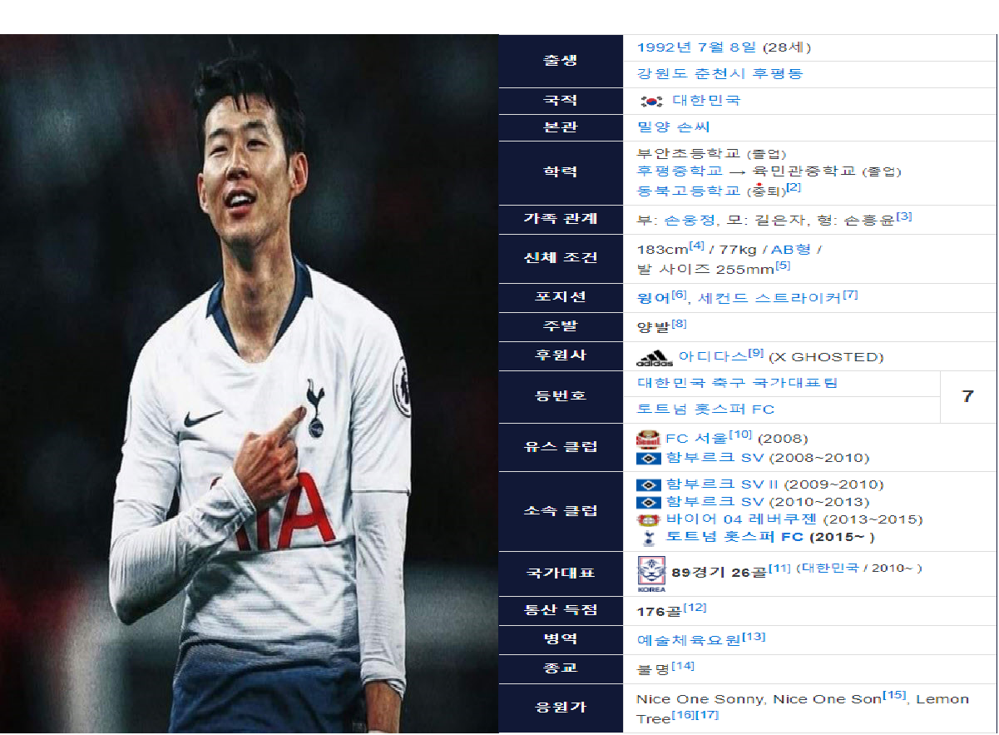

손흥민

손흥민은 역대 최고의 유망주라고 불려왔으며 만 18세에 치른 데뷔전에서 데뷔골을 장식하며 새로운 스타의 탄생을 알리며 해외에서도 상당한 주목을 받았다.
이후 분데릿리가의 명문 구단 레버쿠젠으로부터 구단 역대 최고 이적료를 기록하며 영입 하는 등 차세대 태극전사의 에이스로 전세계의 주목을 받기시작했다
그리고 2015년 8월 28일 한화 추정치 408억을 기록하며 프리미어 리그의 토트넘 훗스퍼FC와 5년 계약을 확정지어 아시아 출신 축구선수의 역대 최고 이적료를 기록했다.